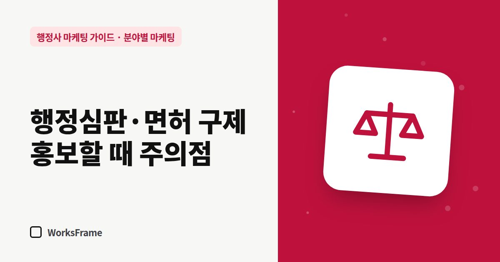

분야별 마케팅
행정심판·운전면허 구제 업무, 홍보할 때 주의할 점
한 줄 답
업무 범위를 넘는 ‘대리’·‘소송’ 표현과 결과 보장 문구는 피하고, 실제로 하는 일을 구체적으로 쓰세요. 이 분야 고객에게는 청구 기한 안내가 가장 먼저입니다.

운전면허 취소나 영업정지 처분을 받은 고객은 대부분 급하고 불안한 상태에서 검색합니다. 이 분야는 문의가 빠르게 들어오는 대신, 광고 표현과 업무 범위에서 특히 신중해야 합니다.
법률 자문이 아닌 실무 가이드입니다. 업무 범위는 대한행정사회와 법률 전문가의 안내를 확인하세요.
1. 업무 범위를 정확하게
행정사가 할 수 있는 일과 변호사만 할 수 있는 일의 경계는 판례와 해석으로 다퉈지기도 합니다. 행정심판 같은 준사법 절차에서 행정사의 역할을 좁게 본 판단을 소개한 법률신문 기고도 있습니다. 그래서 홍보 문구는 실제로 하는 일을 구체적인 말로 쓰는 것이 안전합니다.
| 조심할 표현 | 대신 쓸 표현 |
|---|---|
| “행정심판 대리 전문” | 실제 업무에 맞게: “청구서 등 서류 작성”, “절차 안내” 등 |
| “소송까지 책임집니다” | 쓰지 않기 — 필요하면 변호사 연계 안내 |
| “법률상담” | 업무 범위 안의 “행정 절차 상담” |
2. 결과를 보장하지 않기
“구제율 90%”, “면허 살려 드립니다” 같은 표현은 고객을 오인하게 만들 수 있습니다. 결과는 행정심판위원회 등 판단 기관이 정합니다. 대신 이렇게 쓰세요.
처분 내용과 사정을 먼저 확인하고, 청구 가능성과 준비할 자료를 설명드립니다.
3. 기한을 가장 먼저
이 분야 고객에게 가장 중요한 정보는 기한입니다. 업무 안내 페이지와 첫 상담에서 가장 먼저 다루세요.
- 처분을 안 날·처분이 있었던 날 기준의 청구 기간
- 통지서를 받은 날짜 확인
- 기한이 임박했을 때 먼저 할 일
정확한 기간은 관계 법령을 확인해 기준 날짜와 함께 적으세요.
4. 절박한 고객을 대하는 법
- 과장된 희망보다 현실적인 설명이 오히려 신뢰를 줍니다
- 비용과 진행 방식을 먼저 투명하게 안내
- 범위를 넘는 사안이면 정확히 다른 전문가를 연결
자주 묻는 질문
이 분야는 광고를 하면 안 되나요?
광고 자체가 문제가 아니라 표현이 문제입니다. 업무 범위와 사실에 맞는 표현이라면 알릴 수 있습니다.
경쟁 사무소들이 과장 광고를 하는데요?
과장 광고는 당장 눈에 띌 수 있지만 분쟁과 신고 위험을 안고 있습니다. 정확한 안내와 빠른 기한 대응으로 차별화하세요.